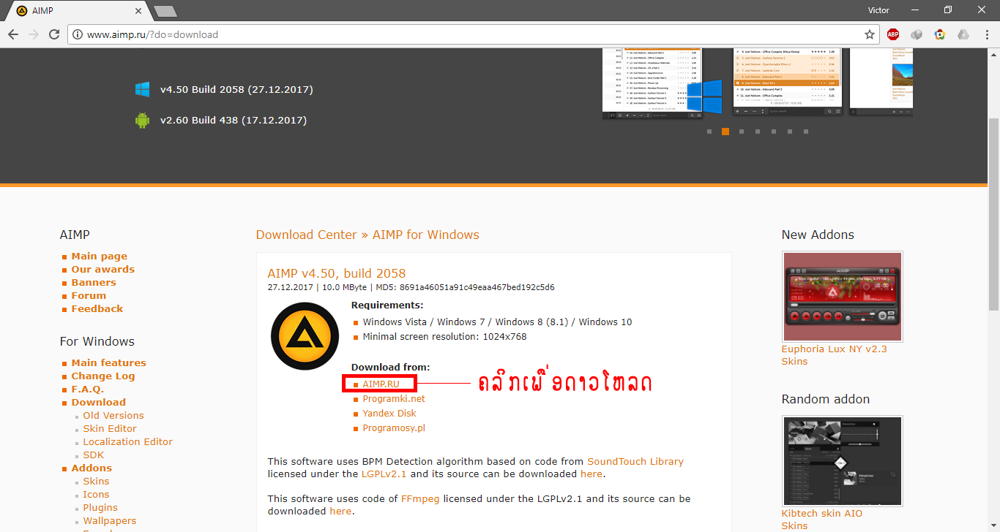
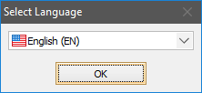
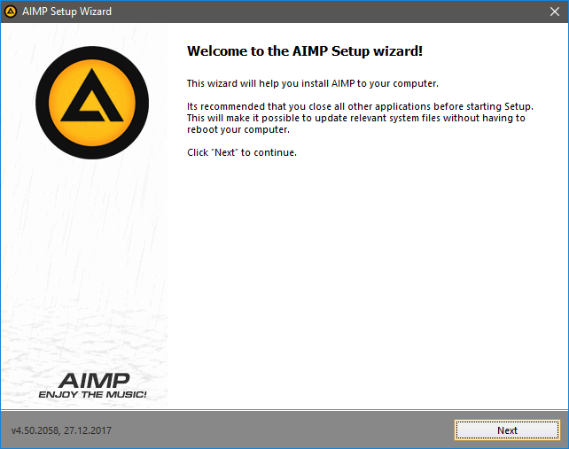
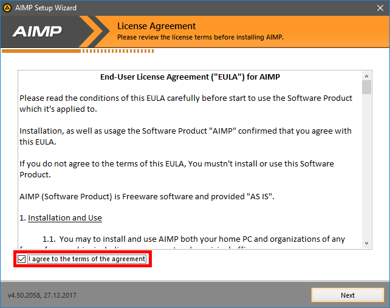
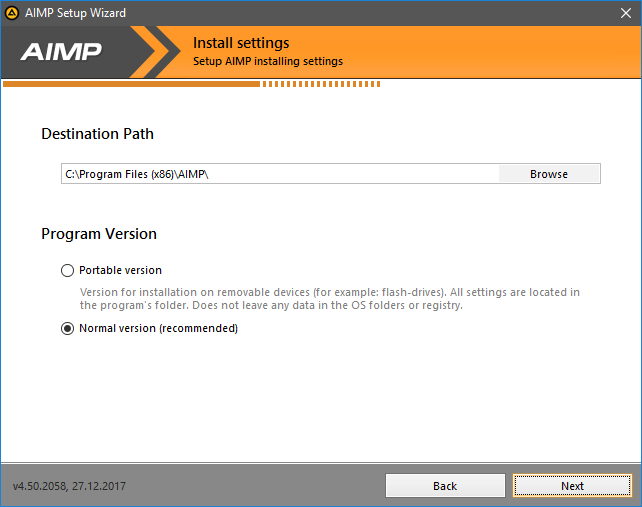
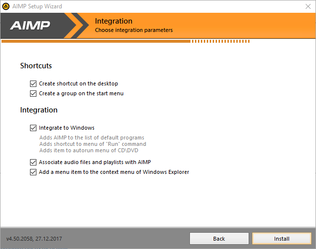
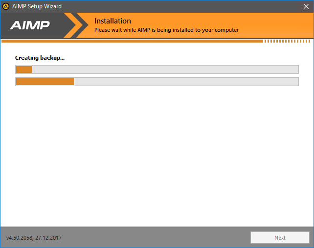
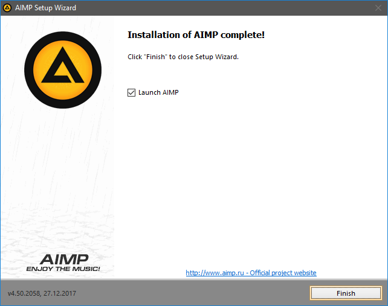

ໂປຣແກຣມຫລິ້ນເພງຟຣີ AIMP4
ສະບາຍດີ!!! ມື້ນີ້ຈະມາແນະນຳໂປຣແກຣມຫລິ້ນເພງທີເປັນໂປຣແກຣມຟຣີ
ໂປຣແກຣມນີ້ເປັນໂປຣແກຣມຟັງເພງທີ່ແອັດມິນມັກທີ່ສຸດແອັດມິນ ເອີ້ນວ່າເປັນໂປຣແກຣມຕິດເຄື່ອງຂອງແອັດມິນເລຍ ໂປຣແກຣມທີ່ວ່າມາແມ່ນ ໂປຣແກຣມ Aimp4
ຂັ້ນຕອນການດາວໂຫລດ ແລະ ຕິດຕັ້ງ
1.ໄປເຂົ້າໄປທີ່ http://www.aimp.ru/?do=download ແລ້ວຄລິກ AIMP.RU ເພື່ອເລີກຕົ້ນດາວໂຫລດ(ດັ່ງພາບປະກອບ) 
2.ເມື່ອດາວໂຫລດແລ້ວກົດເປີດໄຟລທີ່ດາວໂຫລດມາຈະປາກົດໜ້າຕ່າງດັ່ງນີ້ ກົດ ເລືອກ ພາສາ ແລ້ວກົດ OK 
3.ຂັ້ນຕອນນີ້ໂປຣແກຮມ ແນະນຳວ່າຄວນປິດໂປຣແກຣມທຸກໂປຣແກຣມເພື່ອໃຫ້ສະດວກໃນການຕິດຕັ້ງ ຫຼັງຈາກນັ້ນກົດ Next ເພື່ອດຳເນີນການຕໍ່

4.ຕິກທີ່ I agree to the terms of agreement ເພື່ອເປັນການຍອມຮັບຂໍ້ຕົກລົງຂອງໂປຣແກຮມແລ້ວຄລິກ Next

5.ຂັ້ນຕອນນີ້ແມ່ນຂັ້ນຕອນການເລືອກວ່າຈະຕິດຕັ້ງໂປຣແກຣມໄວ້ຢູ່ໃສ ໂດຍໂປຮແກຮມຈະກຳນົດມາໃຫ້ເຮົາສາມາດປ່ຽນບ່ອນຕິດຕັ້ງ ຫຼື ວ່າບໍ່ປ່ຽນກໍໄດ້ ແລະສາມາດເລືອກ ວ່າຈະຕິດຕັ້ງແບບ Portable Version: ເຊິງເຮົາສາມາດ copy ໃສ່ usb ແລ້ວໄປເປີດໃຊ້ຢູ່ເຄືອງອື່ນ Normal: ແມ່ນ version ມາດຕະຖານ (ແອັດມິນແນະນຳວ່າຄວນຕິດຕັ້ງໂຕນີ້) ເມື່ອເລືອກແລ້ວກົດ Next ໄດ້ເລີຍ

6.ຂັ້ນຕອນນີ້ແມ່ນຈະຕັ້ງຄ່າໃຫ້ໂປຣແກຣມເປັນໂປຣແກຣມພື້ນຖານສຳລັບເປີດໄຟລ ເພງໃນເຄືອງຄອມຂອງເຮົາ ຂັ້ນຕອນນີ້ບໍ່ມີຫຍັງພ່ຽງກົດ Next ຕໍ່ໄປໄດ້ເລີຍ

7.ລໍຖ້າໂປຣແກຣມຕິດຕັ້ງ

8.ກົດ Finish ເພື່ອສິນສຸດການຕິດຕັ້ງໂປຣແກຣມ

ພຽງເທົ່ານີ້ເຮົາກໍສາມາດເປີດ file mp3 ຫຼືໄຟລເພງອື່ນໆໃນຄອມຂອງເຮົາໄດ້ຢ່າງສະດວກສະບາຍ ໃຜທີ່ມີຂໍ້ສົງໃສຫຼືບັນຫາໃນການຕິດຕັ້ງສາມາດ ຄອມເມນເພື່ອສອບຖາມລາຍລະອຽດໄດ້ ກົດ Like ກົດ Shared ເພືອເປັນກຳລັງໃຈໃຫ້ແອັດມິນແນ່ເດີ ບົດຄວາມຕໍ່ໄປຈະແມ່ນຫຍັງສາມາດຕິດຕາມໄດ້ທີ່ http://tricky-it.github.io/ ຫຼື ເພຈ Tricky-IT ໄດ້ເລີຍ!!!